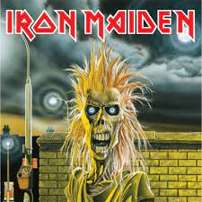
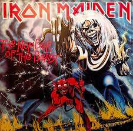
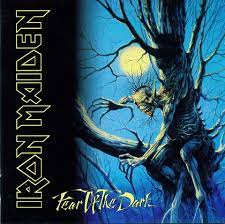
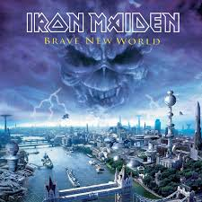

- Студійні альбоми:
- Iron Maiden
- The Number of the Beast
- Fear of the Dark
- Brave New World




Цей сайт зроблено за допомогою Grid-верстки.
- Посилання на інші типи верстки
- Flex-верстка
- Без Flexbox або Grid
Всього Iron Maiden випустили 17 студійних альбомів